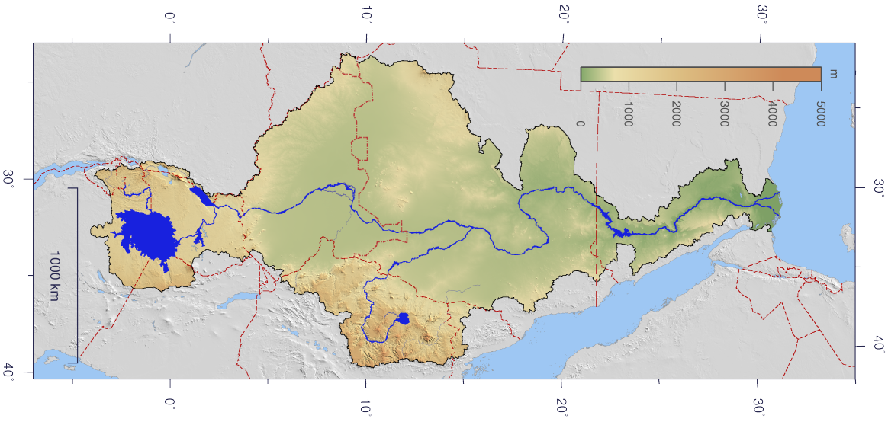

Řeka Nil je jedním z nejdůležitějších vodních toků v Africe a hrála zásadní roli v historii starověkého Egypta. Tato velká a mocná řeka byla životodárnou silou pro Egypťany, protože poskytovala vodu, kterou potřebovali pro pěstování plodin v jinak suché oblasti. Bez Nilu by v Egyptě nebylo možné pěstovat obilí a jiné potraviny, které byly základem jejich stravy. Každý rok Nil zaplavil pole kolem svého toku, čímž přinesl úrodný bahno, který pomáhalo rostlinám růst. Tento cyklus zalévání a úrodnosti byl pro Egypťany velmi důležitý, a proto Nil považovali za dar od bohů.
Nil se v horním Egyptě dělí na dvě hlavní části, které se nazývají Modrý Nil a Bílý Nil. Modrý Nil pramení v Etiopii a je známý svými silnými a pravidelnými povodněmi, zatímco Bílý Nil začíná v oblasti velkých jezer v Africe a je delší a pomalejší. Když se tyto dvě části Nilu spojí v městě Chartúm, tvoří obrovský tok, který teče až do Středozemního moře. Díky své délce byl Nil po dlouhou dobu považován za nejdelší řeku na světě, ale dnes se toto prvenství často připisuje řece Amazonce.